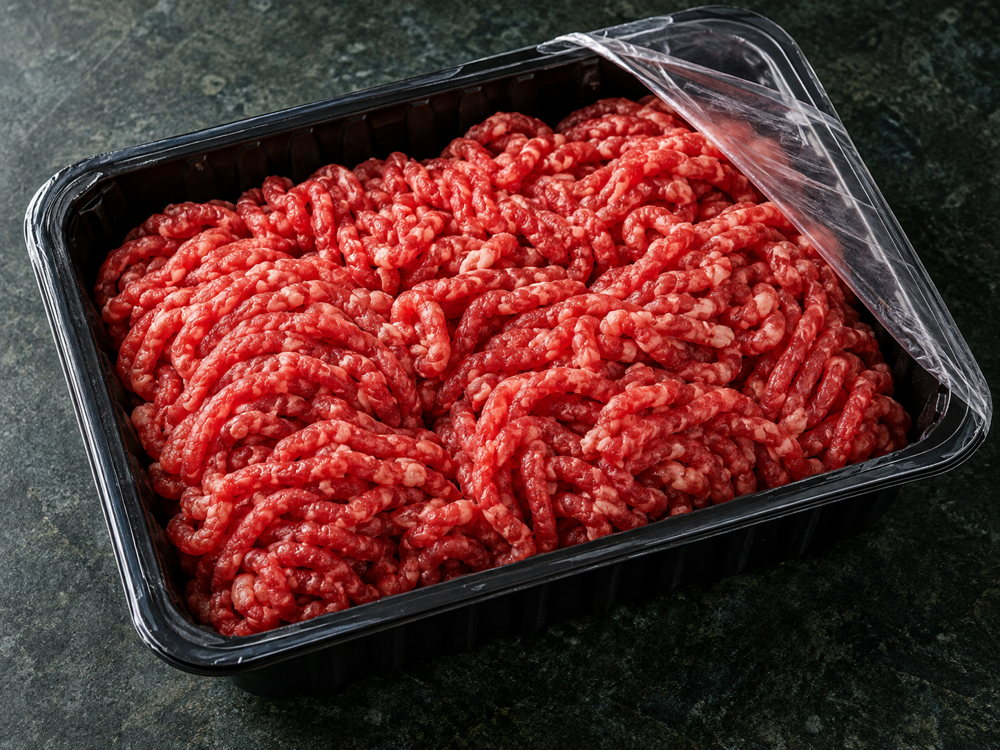
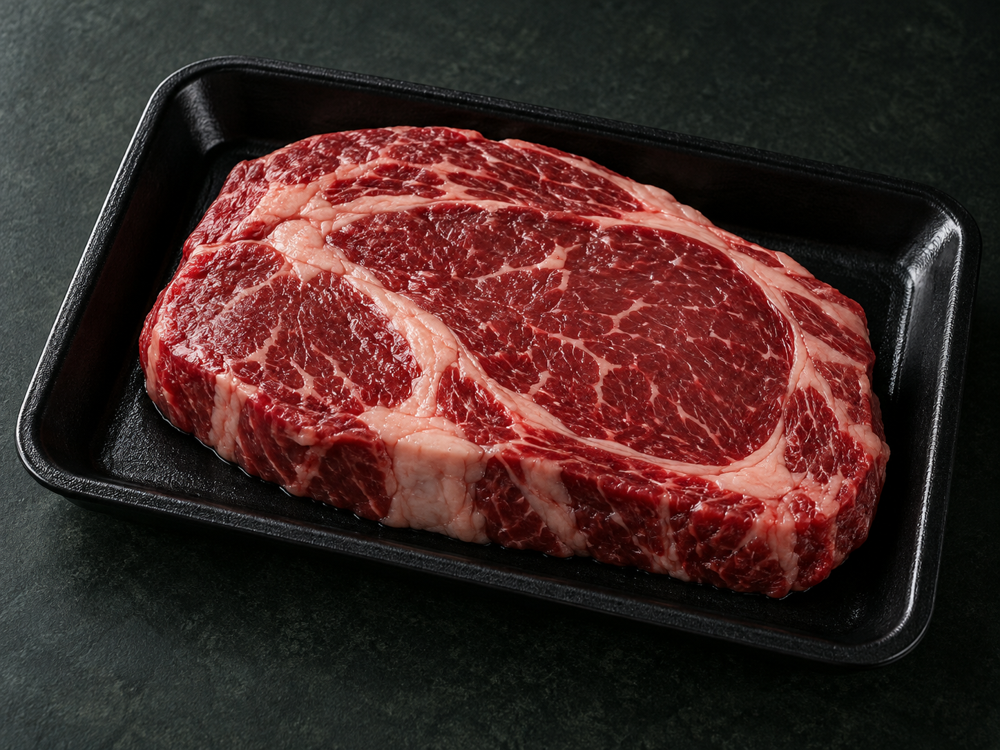
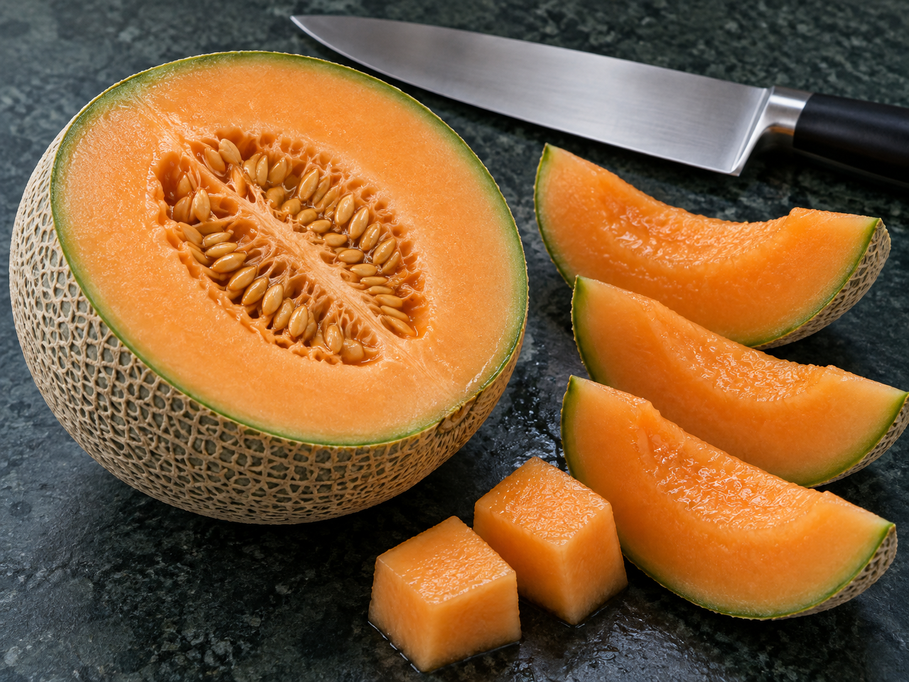
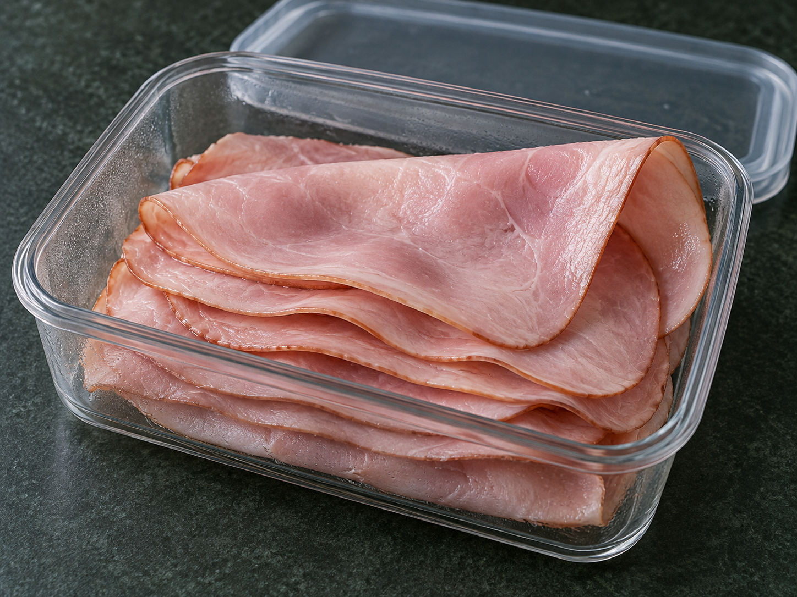

다진 소고기
잘게 다진 고기류는
속까지 익혀야 합니다.
고기를 다지는 과정에서 표면에 있던 세균이 내부까지 섞일 수 있기 때문입니다.
미국 식품 전문 매체 '심플리 레시피스(Simply Recipes)'는 최근 공인 영양사이자 식품과학자인 제니퍼 팔리안(Jennifer Pallian)의 조언을 인용해 냉장 보관 중에도 각별한 위생 관리가 요구되는 대표 식품 3가지와 올바른 보관 지침을 공개했습니다.


다진 소고기
고기를 다지는 과정에서 표면에 있던 세균이 내부까지 섞일 수 있기 때문입니다.
다짐육 · 구입 후 냉장 보관
이 기간 안에 먹기 어렵다면 냉동 보관하는 편이 안전합니다. 조리할 때는 중심부 온도가 섭씨 약 71도에 도달하도록 충분히 가열해야 합니다.
냉장 보관이 이틀을 넘겼다면, 겉모습이 멀쩡해도 섭취하지 않는 것이 안전합니다.

손질 멜론
칼이 껍질의 세균을 과육으로 옮길 수 있습니다. 수분이 많고 산도가 낮은 멜론은 세균이 증식하기 좋은 환경입니다.
깍둑 썬 과일,채소 · 구매 후 냉장 보관
냉장 진열대에 보관돼 있거나 얼음 위에 놓인 제품을 선택하세요. 언제 손질했는지 확인하기 어렵다면 장기간 보관하지 말고 가능한 한 빨리 섭취하는 편이 안전합니다.
곰팡이·미끈거림·발효된 듯한 냄새가 난다면 먹지 말아야 합니다.

슬라이스 햄
햄이나 칠면조 고기 등 얇게 썰어 판매하는 가공육은 취급 과정에서 오염될 수 있습니다. 리스테리아균은 냉장 온도에서도 증식할 수 있어 보관 기간을 지켜야 합니다.
포장 뜯은 가공육 · 정육점에서 썰어준 고기
일반적으로 이 기간 안에 섭취하는 것이 권장됩니다. 표면의 점액질이나 곰팡이, 평소와 다른 불쾌한 냄새가 있다면 폐기해야 합니다.
총정리하자면...
구입 후 1~2일 안에 먹기 어렵다면 냉동 보관하세요.
먹어도 괜찮은지 냄새와 색깔만으로 판단할 수 없습니다.
음식이 상한 건지 의심되면 좀 아까워도 버려주세요.